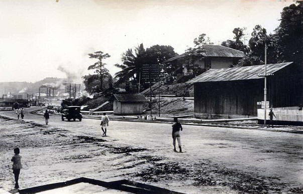
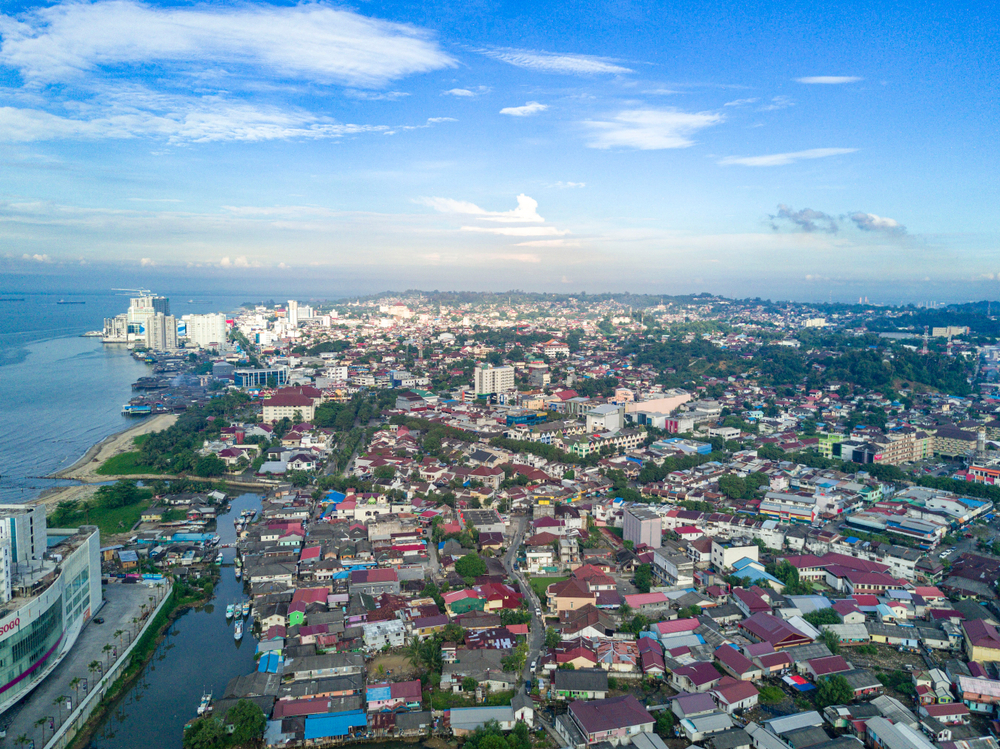
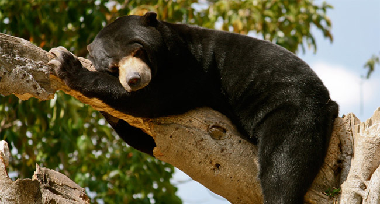
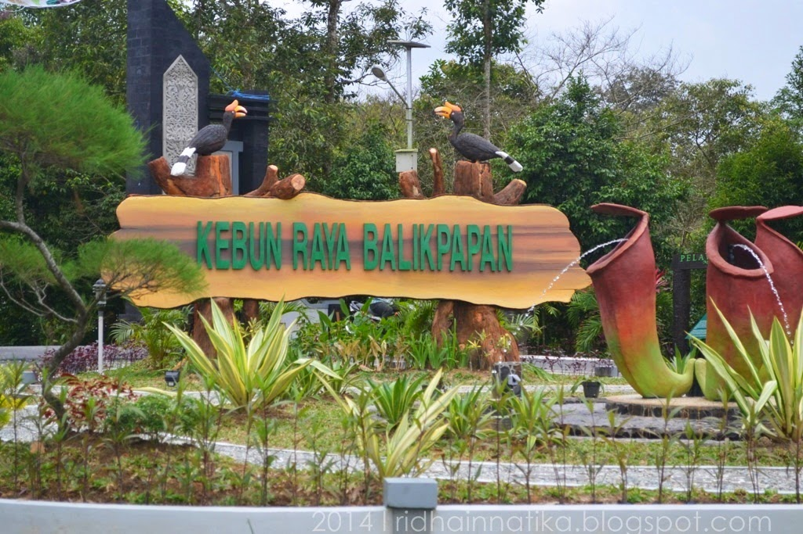

Sejarah

Menurut Wikipedia bahasa Indonesia, asal usul nama Balikpapan
berasal dari legenda. Pada tahun 1739, Sultan Muhammad Idris dari
Kerajaan Kutai memerintahkan pemukim-pemukim di sepanjang Teluk
Balikpapan untuk menyumbang bahan bangunan guna pembangunan istana
baru di Kutai Lama. Ada 10 keping papan yang kembali ke Jenebora
dari 1.000 keping yang diminta oleh Sultan Kutai sebagai sumbangan
bahan bangunan untuk pembangunan Istana Baru Kutai Lama. Kesepuluh
papan yang balik tersebut disebut oleh orang Kutai Balikpapan Tu.
Sehingga wilayah sepanjang Teluk Balikpapan, tepatnya di Jenebora
disebut Balikpapan.
Nama asli Balikpapan adalah Billipapan atau Balikkappan (logat
Banjar). Suku Paser Balik (suku asli Balikpapan) adalah keturunan
kakek dan nenek bernama Kayun Kuleng dan Papan Ayun. Sehingga daerah
sepanjang Teluk Balikpapan oleh keturunannya disebut Kuleng-Papan
atau artinya Balikpapan (dalam bahasa Paser, Kuleng artinya Balik).
Hari jadi kota Balikpapan adalah tanggal 10 Februari 1897. Penetapan
tanggal ini merupakan hasil Seminar Sejarah Balikpapan pada tanggal
1 Desember 1984 1.
Geografis

Kota Balikpapan terletak di tengah-tengah provinsi Kalimantan Timur
dan dikelilingi oleh pegunungan, sehingga bentuk morfologi
wilayahnya bagaikan sebuah mangkok raksasa. Secara geografis, kota
ini terletak pada ketinggian ±0 meter di atas permukaan laut, dengan
titik tertinggi di sebelah utara dengan ketinggian 307 meter di atas
permukaan laut dan sebelah selatan merupakan kawasan rendah dengan
ketinggian 0 meter di atas permukaan laut.
Kota Balikpapan dialiri dua sungai utama, yaitu Sungai Balikpapan
dan Sungai Klandasan beserta anak-anak sungainya yang pada umumnya
mengalir ke arah selatan dan bertemu di Sungai Balikpapan. Dengan
kondisi yang demikian, Balikpapan sangat rentan terhadap masalah
banjir terutama pada musim hujan.
Wisata
Sejak pertumbuhan pesat sektor minyak dan gas, Balikpapan telah
menjadi destinasi favorit bagi pengunjung yang ingin menikmati
liburan akhir pekan mereka, terutama dari mereka yang berasal dari
sekitar Kalimantan Timur. Selain dikenal sebagai pusat industri,
Balikpapan juga menawarkan keindahan alam yang luar biasa. Pesona
utamanya bukan hanya pada kekayaan sejarahnya, tetapi juga pada
keindahan alamnya yang memukau, menawarkan petualangan dan
eksplorasi di tengah keindahan alam yang masih alami.
Kawasan Wisata Pendidikan Lingkungan Hidup (KWPLH)

Ingin melihat sosok menggemaskan beruang madu secara langsung?
Maka, kunjungi Pusat Beruang Madu yang terletak di Kawasan Wisata
Pendidikan Lingkungan Hidup (KWPLH)! Destinasi tempat wisata di
Balikpapan ini akan berikan kamu gambaran mengenai gaya hidup dan
sistem konservasi untuk menjaga populasi beruang madu di
Kalimantan yang jumlahnya kian menyusut.
Lokasi: KWPLH - Jl. Soekarno-Hatta Km. 23, No. 185
Kebun Raya Balikpapan

Bukan hanya di Bogor, kamu juga bisa mengeksplorasi ragam flora
Indonesia di Kebun Raya Balikpapan. Terletak di kawasan Hutan
Lindung Sungai Wain, objek wisata alam di Balikpapan ini dibuka
pada tahun 2014 sebagai sarana rekreasi, konservasi, serta
pelestarian tanaman asli Kalimantan. Kunjunganmu ke tempat wisata
Balikpapan ini akan semakin lengkap jika kamu membawa sepatu lari
agar bisa menggunakan fasilitas jogging track kebun raya sambil
menghirup udara segar yang bersih dari polusi.
Lokasi: Kebun Raya Balikpapan - Jalan Soekarno Hatta Km. 15,
Karang Joang